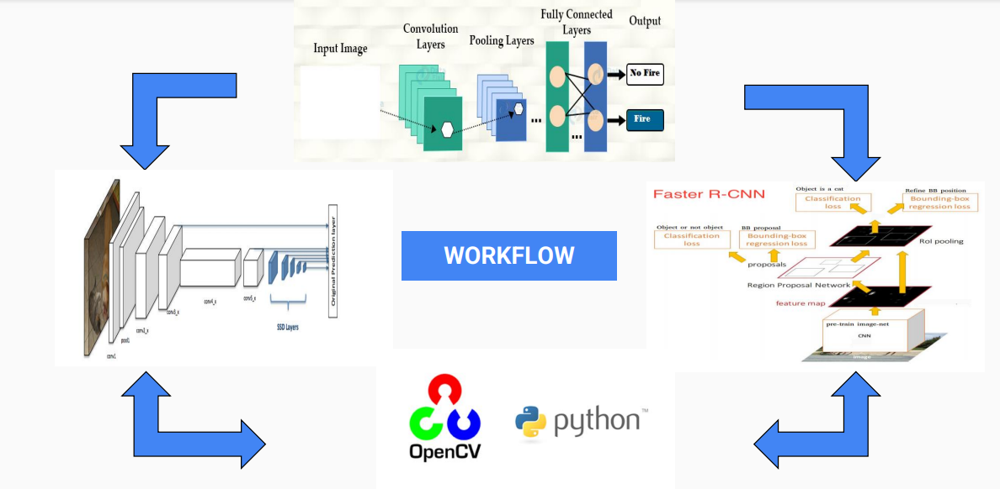
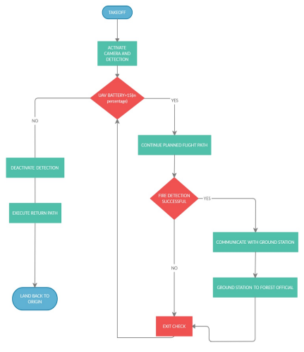

Real-time Forest Fire Detection System using Computer Vision and Deep Learning
Amal Sujith, Nishant Bharali, Naveen Kamal Fall 2023 ECE 5554 Computer Vision: Course Project Virginia Tech
Problem Statement
Forest fires is one of the worst and devastating disasters ever in the world. As per the data from the National Forest Inventory program of FSI, 12.89% of forest area are heavily affected and 58.40% mildly affected by forest fires. We were motivated for a noble cause to tackle the fury of nature. This instigated us to develop a system to detect forest fire and alert the officials within a short span of time to avert a massive outbreak. The objective of this project is to design an accurate and efficient forest fire detection system using computer vision and deep learning techniques such as object detection and image classification. The primary aim of the system is to detect forest fires in real-time through the image analysis and video feeds in outdoor conditions, when deployed in a forest region.
Background
Forest fires pose a significant threat to natural ecosystems. The already existing system i.e., MODIS (Satellite Based Imaging) relays the information within a time span of few days in which the entire forest will be burned off. Since the existing system is inaccurate, early detection is critical for timely response and to avert a catastrophic situation. The proposed system aims to leverage recent advancements in computer vision and deep learning.
Approach
We will employ convolutional neural network (CNN) models, specifically Faster R-CNN inception integrated in Raspberry Pi 4 for fire detection. These models will be trained on dataset consisting of images of forest fires taken available on NDMA (National Disaster Management Authority of India) website as well as images of normal forest scenes without fires. To improve the model's performance, transfer learning will be used, utilizing pre-trained models like Inception and MobileNet as the base and fine-tuning the classifier and regressor heads for fire detection. Data augmentation techniques such as flipping, rotation, and brightness/contrast variation will be applied to enhance the diversity of the training data. Our model development and experimentation phase will be conducted on a high-performance NVIDIA GPU server to expedite the process. After the optimal model is identified, it will be converted and deployed on devices like the Jetson Nano or Raspberry Pi for real-time inference with fixed wing glider or Tilt Roter V-toll in a simulation. The model will process live video streams from cameras mounted on the glider and output bounding boxes around detected fire regions. Including the flight simulation and detection, we have divided our work into several steps listed below:
Coverage Plan
Indigenous Script using Python DRONEKIT
Flight simulation presets
Fixed-wing simulation
Detection through computer vision.
Increase the accuracy of prediction.

Figure 1: Fire Detection Workflow
Experiments and results
Our research will encompass several key phases:
Model Selection: We will experiment with various CNN-based models, including Faster R-CNN and SSD, on the dataset to determine which is best suited for forest fire detection.
Hyperparameter Tuning: We will fine-tune hyperparameters, such as learning rate, batch size, and number of training sets, to optimize the model performance.
Evaluation Metrics: We will employ metrics like precision, recall, F1-score, and inference time to assess the effectiveness of our models.
Real-world Testing: The models will be tested on various real world forest fire footage, simulated scenarios or a supervised fire to measure the accuracy.
Our primary goal is to strike a balance between detection accuracy and inference time. While Faster R-CNN is expected to yield higher accuracy, it may consume more time for inference compared to SSD. We aim to achieve a minimum of 90% precision and recall on the test set. For deployment on devices such as Raspberry Pi 4, the model should operate at a minimum of 5 frames per second on 720p video streams. Comparison between SD Mobilenet V2, RCNN inception V2 with other existing pre-trained models to see the contrast and alterations in accuracy and processing time.

Figure 2: Expected Flight Operation Workflow
Expected outcome
The successful completion of this project will result in a deep learning model for forest fire early detection. The model should be able to provide accuracy above 80% on ideal conditions with a minimum of 60% and the focus on how to overcome the inaccuracy and further limitations. This model can be integrated in existing gliders (UAVs) and surveillance systems, providing timely alerts and intelligence to authorities in the event of a fire outbreak within a short span of time. The system's performance across diverse forest environments and varying weather conditions will be analyzed in detail. The project will be implemented using Python 3 and popular corresponding libraries like PyTorch, OpenCV, and TensorFlow.
Additional features and current limitations
Conditions to find that provide viable alternatives for reduced power consumption.
To ensure fixed-wing glider (UAV) showcases good flight controls despite windy conditions.
To look for an efficient AI based model that can consider number of factors for better prediction under diverse conditions.
To increase the accuracy of predication from higher altitude since the live footage is taken by glider which fly in high altitude.
To achieve a minimum of 90% precision and recall on the test set.
Conclusion
In conclusion, this project aims to tackle the fury of nature by developing an accurate and real-time forest fire early detection system. The combination of computer vision and deep learning will enable the deployment of this system in remote forested areas, enhancing our ability to respond to forest fires swiftly. The resulting model will have an impact on forest fire prevention and management, potentially avoiding a fiery situation and protect natural ecosystems.